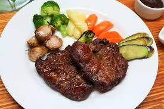

스테이크는 일반적으로, 고기를 근섬유를 가로지르는 방향으로 자른 고기 조각, 또는 그것을 굽거나 튀긴 요리다. 예외적으로 근섬유와 나란하게 자른 컷도 존재한다. 보통 '스테이크'라 하면 쇠고기로 만든 비프 스테이크를 지칭하지만, 돼지고기, 양고기, 닭고기 등의 가금류, 각종 생선, (종류 불문) 다진 고기 등 다양한 재료로도 스테이크를 만들 수 있다. 어원은 '굽다'를 뜻하는 노르웨이 고어에서 온 "steik" 또는 "steikja"이다.